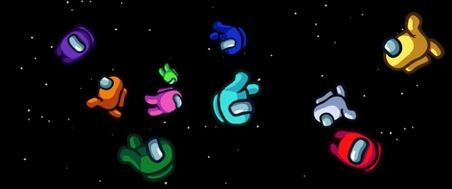
Among Us遊戲玩法與技巧
Among Us是一款很經典的太空狼人殺遊戲。大家會在一個地圖裡走來走去，好人陣營要努力把任務做完或是揪出壞人，而壞人則是要想辦法在不被發現的情況下把好人通通殺掉。
遊戲是怎麼進行的？
遊戲主要是這兩個階段在輪流：
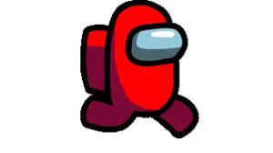
到處跑的階段
大家在地圖上自由移動。好人去解任務，壞人則是假裝解任務，然後找機會殺人或是用sabotage來搞破壞。
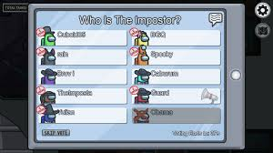
開會投票階段
只要有人看到屍體按下report，或是跑去按緊急按鈕，所有人就會被叫來開會。大家會在聊天室交換情報，吵完之後投票把最可疑的人踢出太空船。
角色陣營介紹
crewmates(好人)人比較多，但完全不知道誰是隊友誰是壞人，只能靠觀察。
.jpg)
任務跟動畫
任務分長短跟共同任務。有些地圖會有visual tasks(像是掃描身體)，做的時候會有動畫，因為壞人做不出動畫，所以只要有人看到你做，你就可以證明自己是絕對的好人。
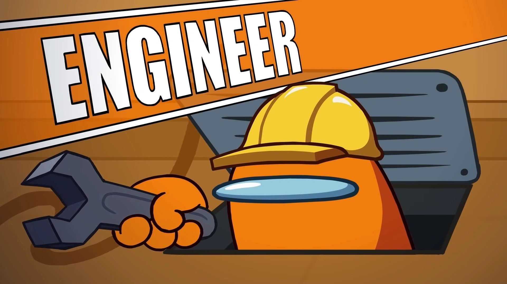
engineer(工程師)
很特別的好人，因為可以像壞人一樣鑽vents來快速移動，但要注意如果在出入時被看到，很容易被誤會成壞人。
.jpg)
scientist(科學家)
可以看隨身螢幕知道大家的生死狀態，有人被kill就能馬上發現，很適合用來推算作案時間。
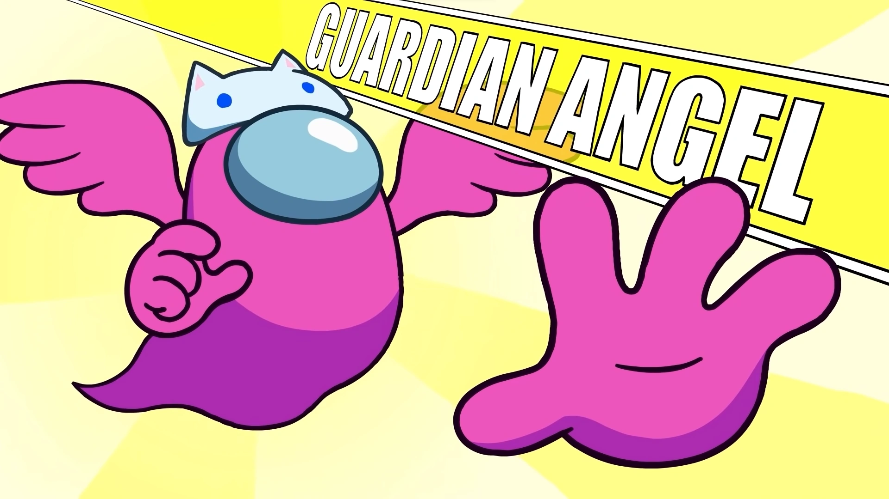
guardian angel(守護天使)
通常是第一個死掉的人會變成天使，可以給活著的人放護盾，擋下壞人的一次攻擊。
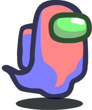
靈魂狀態
被殺死之後會變成透明的ghosts，雖然不能講話了，但還是要把剩下的任務解完，好人才能贏。
impostors(內鬼陣營)就是隱藏的殺手，可以殺人還能用特別的技能，現在還有不同的職業可以玩：
基本能力
可以直接按kill殺人，殺完會有冷卻時間。地圖上的vents只有壞人跟工程師可以鑽，是用來逃跑的好工具。
.jpg)
shapeshifter(變形者)
可以變成別人的樣子去殺人，用這招來嫁禍給別人超好用。但變身的時候地上會留下一顆蛋殼，要小心別被撞見。
.jpg)
phantom(幻影)
可以用技能隱形一小段時間，殺完人之後隱形溜走，別人根本抓不到你。
內鬼的sabotage(破壞技能)
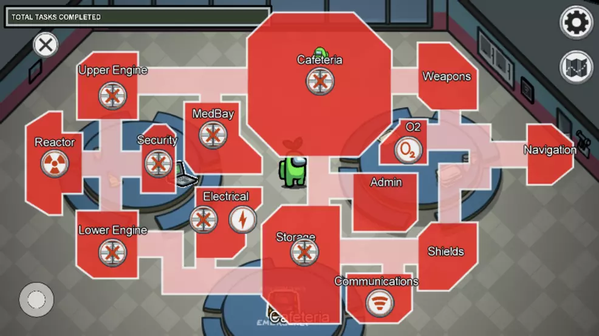
壞人隨時可以打開地圖搞破壞，主要分成會死人的跟用來干擾的：
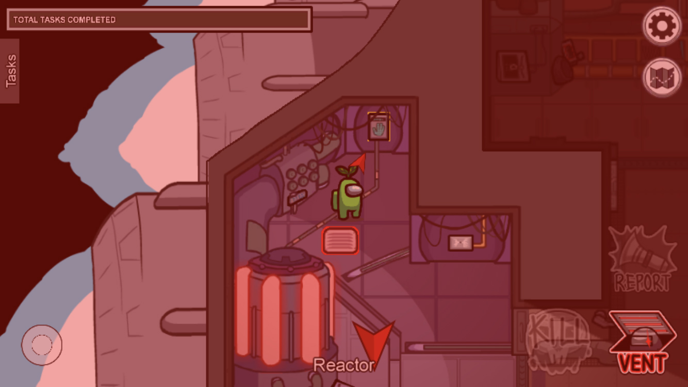
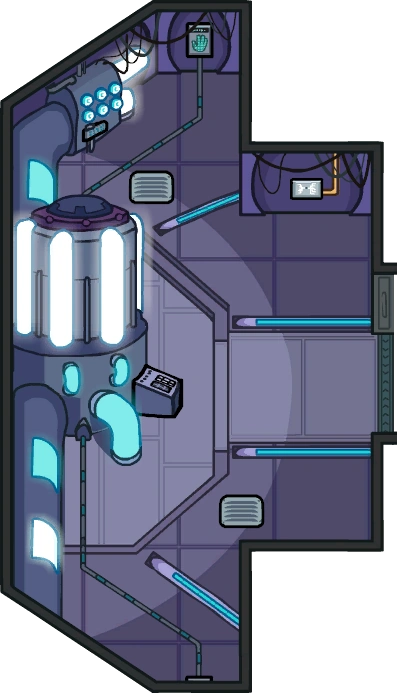
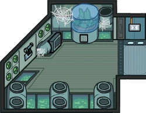
reactor(反應爐)跟O2(氧氣)
畫面會閃紅光並倒數，好人必須趕快去指定的地方解開，如果時間到了還沒修好，壞人就直接贏了。
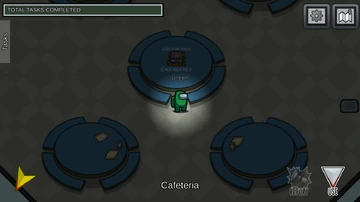
lights(關燈)
好人的視野會變得超級小，幾乎全盲，這時候壞人混在人群裡殺人最容易。
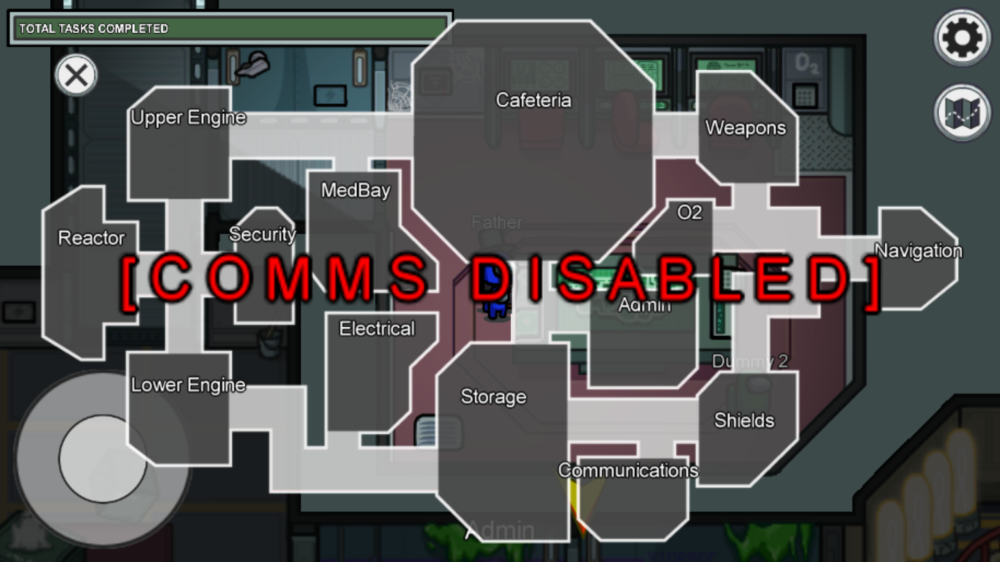
communications(comms；破壞通訊)
大家的任務表會看不見，而且監視器之類的設備都會壞掉不能看。
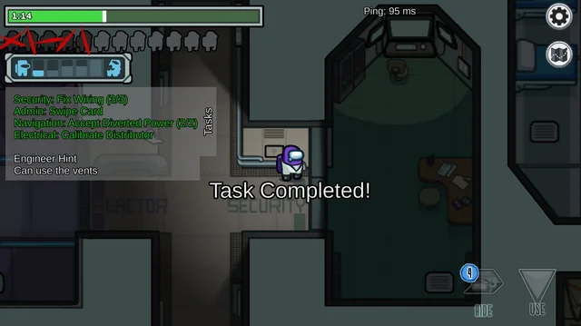
doors(關門)
把房間的門鎖起來幾秒鐘，可以用來把人關在一起殺，或是拖延別人去修東西的時間。
實用的騙人跟抓人技巧
好人怎麼抓鬼：
找保鑣
找一個你確定是好人的人(比如看過他掃描)一起行動。
看監視器
去管理室看螢幕，如果發現有人進房間卻沒出來，但另一個房間突然多出一個人，那他絕對是鑽vents過去的。
盯著任務條
看別人解任務的時候，左上角的綠色進度條有沒有增加，沒有的話他可能在假裝。
內鬼怎麼騙人：
人群中襲擊
大家疊在一起修燈或修東西的時候直接按kill，因為人疊在一起，根本看不出來是誰殺的。
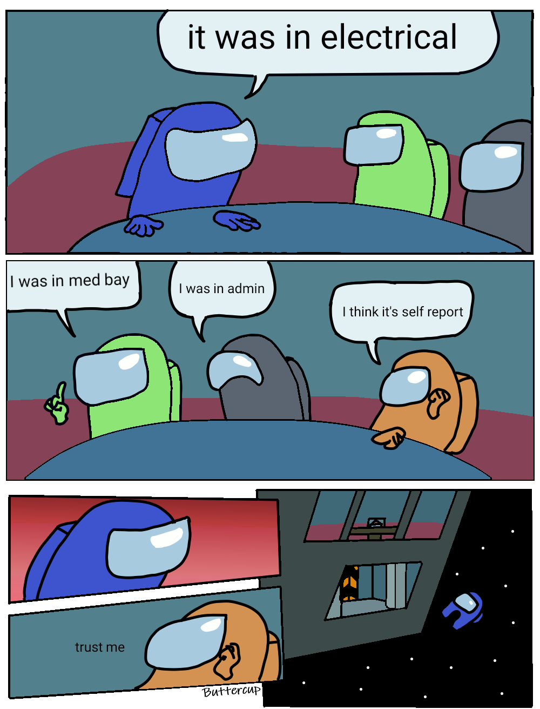
self-report
殺完人馬上自己報警，假裝是路過發現屍體，然後把風向帶給別人。
裝好人
弄出會死人的破壞時，跟著大家一起跑去修，假裝自己很努力在幫忙。
參考資料
- Among Us Wiki
https://among-us.fandom.com/wiki/Among_Us_Wiki - Reddit
https://www.reddit.com - 巴哈姆特
https://www.gamer.com.tw